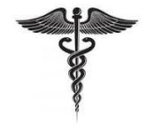

. 
In general, health refers to a state of physical, mental, and social well-being, not just the absence of disease or infirmity. It encompasses various aspects of a person's life, including their physical health, emotional and mental well-being, and social relationships. Here's a more detailed look at health: Physical Health: This relates to the physical well-being of the body, including its structure, function, and resistance to disease and injury. Mental Health: This refers to a person's emotional, psychological, and social well-being, including their ability to cope with stress, form relationships, and maintain a positive outlook on life. Social Health: This encompasses a person's relationships with others, their ability to participate in social activities, and their sense of belonging. Factors that influence health: Lifestyle: Factors like diet, exercise, smoking, and alcohol consumption significantly impact health. Environment: Exposure to pollutants, toxins, and infectious diseases can negatively affect health. Genetics: Genetic predisposition to certain diseases can influence health. Healthcare Access: Access to quality healthcare services can improve health outcomes.
The launch of the National Essential Medicines Lists repository marks a significant step forward in global health-care collaboration," said Deus Mubangizi, WHO’s Director of the Health Products Policy and Standards Department. "By providing a centralized and accessible platform, we are equipping policymakers, health-care professionals and researchers with the critical data needed to make informed decisions and foster equitable access to essential medicines worldwide. Read more
Tips to a heathy life
To promote healthy living, focus on a balanced diet, regular exercise, sufficient sleep, stress management, and limiting harmful substances like alcohol and smoking. Prioritize hydration, good hygiene, and regular health checkups. Elaboration: Diet: Eat a balanced diet: Include fruits, vegetables, lean proteins, and whole grains. Limit processed foods: Avoid excessive sugar, salt, and unhealthy fats. Stay hydrated: Drink plenty of water throughout the day. Physical Activity: Exercise regularly: Aim for at least 30 minutes of moderate-intensity exercise most days of the week. Find activities you enjoy: This will make it more likely that you'll stick with your exercise routine. Sleep: Get enough sleep: Aim for 7-9 hours of quality sleep each night. Establish a regular sleep schedule: This helps regulate your body's natural sleep-wake cycle. Stress Management: Practice stress-reducing techniques: Try meditation, deep breathing, yoga, or spending time in nature. Maintain a positive outlook: Cultivate a sense of gratitude and find activities that bring you joy. Harmful Substances: Limit alcohol consumption: If you drink alcohol, do so in moderation. Quit smoking: Smoking is a significant risk factor for various health problems. Hygiene and Health Checkups: Practice good hygiene: Wash your hands frequently, especially after being in public areas. Schedule regular health checkups: This helps detect and manage potential health issues early. Additional Tips: Socialize: Maintain strong relationships with friends and family. Engage in hobbies: Make time for activities that you find enjoyable and fulfilling. Healthy Living: Diet & Exercise Tips, and Things to Avoid - MedicineNet What are 10 tips for a healthy lifestyle? * Eat a balanced diet and reduce your sugar intake. * Stay well hydrated. * Get 7-9 hou... MedicineNet How to Maintain a Healthy Lifestyle: 12 Effective Tips - Healthline 6 Mar 2024 — 12 Tips for Maintaining a Healthy Lifestyle * Maintain a healthy weight. * Eat nourishing foods. * Limit processed food... Healthline 7 tips to live a happier life - Mayo Clinic Health System 9 Aug 2022 — Follow these seven tips to increase your energy and live a happier, healthier, more productive life: * Eat nourishing f... Mayo Clinic Health System Show all Generative AI is experimental. 10 health tips for 2025 Eat a healthy diet. Consume less salt and sugar. Reduce intake of harmful fats. Don't smoke. Be active. Check your blood pressure regularly. Follow traffic laws. Take antibiotics only as prescribed.